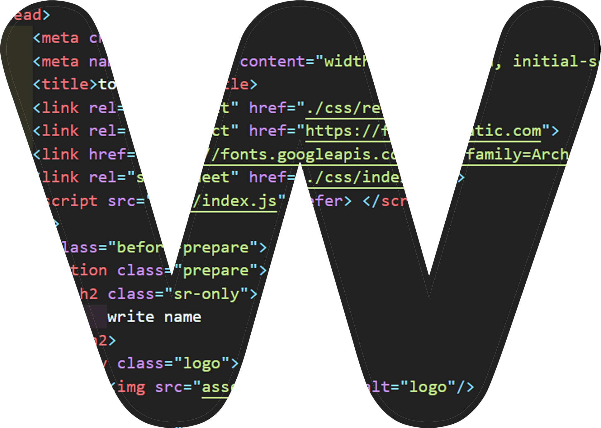

안녕하세요!

About Me
- 정태웅
- 1995.03.07
- 경기도 성남시
- 010-2379-9829
- xodnd9503@gmail.com
-
- values
- 본립도생(本立道生)"기본이 서면 나아갈 길이 생긴다" 기본에 충실하다면 그것을 바탕으로 어떤 일이든 빠르게 적응할수 있을거라 생각합니다 변하지 않는 기본을 토대로 맡은 업무를 자신있게 해낼것입니다.
-
- front-end
- HTML5, CSS3, JavaScript, React 웹표준과 웹접근성을 고려해 더 나은 Sementic markup 작성하려 노력중입니다. 브라우저의 작동 원리, DOM의 이해와 Vanila Javascript의 기본기를 토대로 빠르게 성장중입니다.
-
- back-end
- JAVA, Oracle DB, SPRING SPRING으로 개발한 웹 프로젝트의 경험으로 데이터베이스 구현과 서버사이드의 구조와 원리를 이해할수 있었습니다. 백엔드 개발자와 원할한 의사소통이 가능할것이라 생각합니다